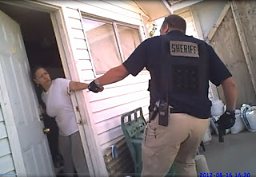
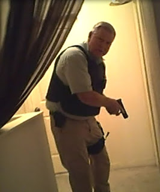
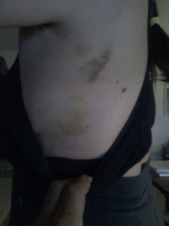

 |
| Detective Rich Perecz assaults Marcella Cruz. |

“Bear! There are guys with guns outside!” shouted Marcella Cruz
to her husband as she looked out the kitchen window of their farmhouse in
Letha, Idaho.
Timidly opening the kitchen door, Marcella – a small,
slender, middle-aged woman – spied a large man carrying a gun and wearing a
tactical vest.
“Don’t go back into the house,” the stranger ordered
Marcella as the woman instinctively retreated into the safety of her home.
At roughly the same time, another intruder armed with an
assault rifle pounded on the front door.
“Come out!” he demanded.
As Marcella tried to shut the kitchen door, the first
intruder – who outweighed her by at least 100 pounds – grabbed her by the left
wrist and started to pull the terrified woman from the house.
“Why are you dragging me out of my home?” asked the
terrified woman. “Why would you be pulling me out of my home?”
“Open the door,” insisted the assailant, using his weight
advantage and leverage to extract the woman, who had braced herself against one
side of the door while clinging desperately to the other with her right hand.
As she lost her grip, the left side of Marcella’s body scraped painfully against
the door frame before she was thrown to the ground.
One of the invaders finally identified himself.
“Bear! Step out – Sheriff’s office!” bellowed the Berserker
packing an assault weapon.
“What’s the matter?” asked Michael Gibbons – known as “Bear”
to his friends -- as the exasperated farmer opened the front door. “What is the
problem?”
“Who else is in the house?” demanded one of the invaders.
“Nobody,” replied Bear.
“You guys having a fight this morning?” inquired the armed
man, his finger still poised on the trigger.
“We had an argument,”
Bear replied, his voice tinged with incredulity. “What’s going on?”
“We’ll let you know in a sec,” the armed man replied in a
dismissive tone. “For right now, go to your knees for me. Face away from me.”

With those words, the armed stranger -- who had not
established any legal justification for invading the couple’s property -- ordered
Bear to assume the coup de grace
position.
At this point, Bear – who had just seen his wife assaulted
at gunpoint -- had every reason to think that he might be murdered, and no legitimate
reason to believe that the marauders were actual peace officers. After all,
anybody can buy weapons and body armor, and official-looking insignia.
The raiding party was composed of Gem County Sheriff’s
Deputies, but their behavior was that of a home invasion gang, rather than
a group of peace officers.
“What is this about?” Bear demanded from his knees as a
deputy handcuffed him.
“We’re going to tell you – now’s the time to shut up!”
sneered the goon with the assault rifle.
A more honest answer would have been, “Now’s the time to invent
a justification for the raid.”
After being handcuffed behind his back, Bear was ordered to
get up.
“Why is this happening?” Bear demanded to know.
“I said get up!”
answered one of his captors, who, with the help of another, hoisted the tiny
man off the ground – and then promptly dropped him on his tailbone. Bear
suffered a severe back injury that has left him incapacitated.
 |
| Sheriff Chuck Rolland. |

With Bear in handcuffs and Marcella being detained, a small
group of officers, led by Sheriff Chuck Rolland, conducted a warrantless search
of the home on the pretext of “clearing” it.
As the video record of the search illustrates, the officers
were not looking for a concealed threat to their safety. They made little
effort to clear the corners or to inspect potential hiding spots. However, they
were very interested in finding evidence of marijuana use – lifting and
sniffing ashtrays and going through personal effects. After going upstairs they
found what they believed to be a “grow room.”
“We’ll have to get a warrant for this,” one of them
remarked.
“We found your grow room,” Lt. Timony told Bear after the
officers emerged from the home a few minutes later.
“You found our tomato plants!” Bear responded, pointing out
that the supposedly suspicious “grow room” was actually an aquaponics system of the kind
he had described to an indifferent Emmett City Council just a few months
earlier.
Although Bear admitted that he does occasionally use
marijuana to treat lingering chronic injuries – the most serious of which he
received, ironically, as a police officer when he was stabbed by a shoplifter
in 1982 – he hadn’t smoked any that morning.
| Sheriff Rolland and a deputy in Bear and Marcella's kitchen. |

Marcella had let him sleep in that morning, and Bear had
gotten up just a short time before the police materialized on his property. In
that brief period, however, he and Marcella had one short, inconsequential verbal
spat of the kind every couple occasionally experiences.
The argument was
overheard by a neighbor who -- displaying a sense of civic responsibility more
appropriate to East Germany than western Idaho – called the police.
Bear and Marcella have lived in Letha, an unincorporated town
near Emmett, Idaho, for about two years. They are organic farmers, like most of
their neighbors. Unlike at least one of their neighbors, the couple is
determined to mind their own business.
On the morning of August 16, a neighbor who identified
herself as “April” overheard the couple’s argument and called 911 to report
that she thought Bear was “beating” his wife.
Because the neighborhood is located near the county line,
the cell phone call was originally directed to the dispatcher for the Payette County Sheriff’s
Office, who relayed the information to her counterpart in Gem County.
In
making the handoff, however, both dispatchers clearly understood one critical
fact: There was no indication that
weapons were involved in the alleged domestic dispute, or even to be found
in the household. This meant that the proper response to the report, according
to established policy, was a low-key “welfare check.”
Why, then, did the Gem County Sheriff’s Office choose to
mount a SWAT-style raid against Bear and Marcella? The short answer is that the
couple was the victim of “political profiling”: They were identified as a
threat to “officer safety” on account of their perceived political opinions.
“Are you familiar with these guys?” asked a deputy
identified in the 911 recordings as “Officer 57.”
“Negative,” answered another deputy designated “Officer 56.”
“I am, and it’s affirmative, there is [sic] weapons,” continued Officer 57. “He is – or at least was – anti-law enforcement. We’ve had issues
with him. He’s a Constitutionalist.”
Idaho is one of the few states in the Union where most
people would consider the term “Constitutionalist” to be a plaudit rather than a
pejorative.
That epithet – which Officer 57 spat out in audible disgust –
was the reason why Bear would soon find himself on his knees with his back to a
deputy whose finger was caressing the trigger of an assault rifle.

The illegal search of the couple’s home yielded no evidence
of drug dealing, so the raiding party had to be satisfied with writing a
misdemeanor citation for possession of drug paraphernalia. Before they left, however,
Detective Rich Perecz couldn’t resist the opportunity to upbraid the victims
for displaying insufficient docility.
“Perecz knelt down next to me, showed me his badge and said,
`What is this?’” Bear related to me during an interview in his living room. “I
said, `It’s your badge.’ He said, `Can you tell me why your wife wouldn’t come
out of the house when I told her to?’ Those guys didn’t identify themselves as
the Sheriff’s Office until after they
had dragged Marcella out of our house. All we knew was what she said when she
saw them coming through our corn field – they were men with guns.”
Perecz briefly attempted to preserve the pretense that an
act of domestic violence had occurred at the couple’s home.
“He asked me, `Why are your wife’s knuckles all scraped up?’”
Bear recounts. “He was trying to get me to admit that I had beat my wife. He
apparently knows nothing about living and working on a farm. Of course Marcella’s
hands get scraped from time to time; we work
for a living, after all.”
The official police report notes that Marcella Cruz showed “no
evidence of battery” at the end of the incident. (Interestingly, Marcella was
not identified as a “victim” in that report.) Photographs taken two days later
showed that her left arm and side were disfigured with large bruises that had
been inflicted by Detective Perecz when the officer yanked her out of her
kitchen doorway.
| Detective Rich Perecz, from his Facebook page. |

If Marcella’s husband had been responsible for those bruises,
he would be facing felony domestic violence charges. Under Idaho law (Chapter
9, 18-903 and 18-905[b]), Perecz’s actions constitute aggravated assault.
In an e-mail, I asked Perecz this question:
"By physically seizing a small, unarmed, terrified woman who was
not a criminal suspect, and injuring her in the process, didn’t you commit an
act that can be fairly characterized as criminal battery, as defined in Idaho
law?"
Despite repeated requests, Perecz has declined to answer
that question, or provide any other information about the incident.
 |
| Marcella Cruz's injuries. (Credit:Michael Gibbons.) |

In his official report, Lt. Dave Timony states that the
officers were advised that Bear and Marcella were "possibly
armed and may be extremely confrontational to authority."
By way of e-mail, I asked Lt. Timony to elaborate on that
claim:
“What
was the basis of that characterization? Is it the policy of your department to
compile political or ideological `profiles’ of people who have had encounters
with law enforcement in Gem County? Has your department undergone
training/indoctrination regarding supposed threats posed by people characterized
as `constitutionalists’?”
Like
Detective Perecz, Lt. Timony has refused to reply to my inquiries.
It
is true that Bear and Marcella had previously had unpleasant dealings with the
Gem County Sheriff’s Office – and with Detective Perecz, in particular.
More
than a year ago, Marcella contacted the Sheriff’s Office to report that a man
calling himself “Greg Hall,” who had lived with them for an extended period, had
stolen money and jewelry from them. Marcella provided me with copies of e-mail
messages in which she and Detective Perecz had discussed the theft – including the
suspect’s specific location, which at the time was just across the Snake River
in Ontario, Oregon.
“He
told me that he couldn’t help us, because the suspect had fled the
jurisdiction,” Marcella related to me. “But it’s not as if he couldn’t pick up
a telephone and inform the Malheur County Sheriff’s Office, or the Ontario
Police. The bogus `domestic violence’ report that led to the raid on our home
was originally received by Payette County and relayed to Gem County. It’s not
as if these people can’t talk to each other.”
It’s
worth pointing out as well that inter-state law enforcement cooperation in the
Treasure Valley – an area encompassing towns on both sides of the Idaho/Oregon
border – is quite commonplace. This is especially true of narcotics
enforcement, which is a far more profitable racket than legitimate efforts to
protect persons and property from criminal violence.

“Now
that you know we didn’t have a fight, why don’t you pack up and go away?” asked
Bear following the illegal search of his home.
“Oh,
we can’t do that,” one of the deputies insisted. “We’re here now, and we have
probable cause.”
What
they had – or, at least, thought they had -- was an opportunity to seize Bear
and Marcella’s home and farm through “civil asset forfeiture.” That tantalizing
prospect evaporated when it became clear that the couple was cultivating organic
tomatoes, rather than marijuana.
“The
Gem County Sheriff’s Office wasn’t at all interested in helping us when we were
victims of a crime,” Marcella summarizes. “But they were ready and eager to
attack our home when they were given an excuse.”
That excuse was a report made by a neighbor who, according
to Bear and Marcella, is part of a neighborhood clique who resents the couple for
reasons they can’t understand. The woman they identify as the leader of that
clique has accused the couple of stealing water from the irrigation co-op. That
charge is rejected by the co-op’s elected water master, Marvin Richardson (a long-established organic farmer and prominent
political activist who had his name legally changed to “Pro-Life”).
The malicious imagination of a hostile neighbor transmuted a
brief and trivial marital argument into evidence of “domestic violence.” The vicious
opportunism of the Gem County Sheriff’s Office magnified the incident into a
pretext for a paramilitary raid that resulted in an act of felonious battery
against Marcella.
In a country where gratuitous SWAT raids frequently result in
state-sanctioned murder, this is a potentially fatal combination – especially
when the subject of the raid is designated a “Constitutionalist” and thus
regarded as an Enemy of the State.
Update, October 12:
Diana Baird, editor of the Emmett Messenger-Index, offered the following reply to a reader's request that her paper follow up on the story above:
"Thank you for bringing this to my attention. We have not published anything about this alleged incident. I checked the Idaho Repository and see that the man pleaded guilty to the misdemeanors. I will keep my eyes on the court filings to see if Mr. Gibbons files a lawsuit."
I have been informed that a reporter from the Idaho Press-Tribune is looking into this "alleged" event.
In related news:
A pre-dawn SWAT raid in Montana left a 12-year-old girl with first- and second-degree burns after one of the armored heroes threw an incendiary round through the window of her second-floor bedroom. The no-knock raid -- one of about 70,000 carried out in the U.S. each year -- was part of a narcotics investigation. No drugs were found, and no arrests were made. The police chief justified the use of a SWAT team on the basis of a "Threat Matrix" assessment, which is designed to measure potential risks to that most precious of all things, "officer safety."
Incidentally, the raiders insisted that they believed that there was a meth lab in the residence -- which explains why they were blindly throwing incendiary grenades into the building.
Update, October 12:
Diana Baird, editor of the Emmett Messenger-Index, offered the following reply to a reader's request that her paper follow up on the story above:
"Thank you for bringing this to my attention. We have not published anything about this alleged incident. I checked the Idaho Repository and see that the man pleaded guilty to the misdemeanors. I will keep my eyes on the court filings to see if Mr. Gibbons files a lawsuit."
I have been informed that a reporter from the Idaho Press-Tribune is looking into this "alleged" event.
In related news:
A pre-dawn SWAT raid in Montana left a 12-year-old girl with first- and second-degree burns after one of the armored heroes threw an incendiary round through the window of her second-floor bedroom. The no-knock raid -- one of about 70,000 carried out in the U.S. each year -- was part of a narcotics investigation. No drugs were found, and no arrests were made. The police chief justified the use of a SWAT team on the basis of a "Threat Matrix" assessment, which is designed to measure potential risks to that most precious of all things, "officer safety."
Incidentally, the raiders insisted that they believed that there was a meth lab in the residence -- which explains why they were blindly throwing incendiary grenades into the building.
SECOND UPDATE, October 16:
I have learned from a
source close to the Idaho Press-Tribune
that the paper plans to run a story tomorrow (Wednesday, October 17) about the assault
on Bear and Marcela by the Gem County Sheriff’s Office.
Sheriff Rolland
reportedly will be quoted as saying...
…wait for it...
… that he
"stands by the actions of his deputies."
Given that Rolland was
actually
standing next to them as they conducted the
illegal search, this isn’t terribly surprising.
The same story will
reportedly include a comment from an anonymous "law enforcement
officer" who will confer his benediction on the raid as "standard
operating procedure."
In other words, this home invasion was not one of those anomalous "isolated incidents" we read about from time to time. In Idaho, it is "standard operating procedure" for police conducting a welfare check to rip a terrified woman from her home and then force her husband to kneel with the muzzle of an assault rifle at the back of his head because the husband has been identified as a "constitutionalist" -- and then to carry out an illegal search of the home in the hope of finding something --anything will do -- to justify the raid.
In other words, this home invasion was not one of those anomalous "isolated incidents" we read about from time to time. In Idaho, it is "standard operating procedure" for police conducting a welfare check to rip a terrified woman from her home and then force her husband to kneel with the muzzle of an assault rifle at the back of his head because the husband has been identified as a "constitutionalist" -- and then to carry out an illegal search of the home in the hope of finding something --anything will do -- to justify the raid.
Dum spiro, pugno!
126 comments:
We've now entered that stage of tyranny in which the State empowers ill-mannered, ill-educated, incompetent and otherwise unemployable thugs to lord it over productive, peaceful people.
As for myself, I will treat any visit by government agents as much more dangerous than a potential home invasion.
Do not open the door. Immediately call your lawyer while loudly announcing it. While the phone rings, demand a warrant, then (because they will not have one) demand they leave immediately.
You are of course recording all this, correct? Because if not, get thee a security camera post-haste...preferably one linked to an offsite recording agency.
Further, I'm not sure. But I am beginning to think the next step is to follow the plan above...and to arm oneself.
This instance could have ended so easily with:
1) their dog being shot; I'm amazed he wasn't, it's SOP now
2) the wife or husband tazed, beaten, and possibly killed.
Had there been children, they likely would be remanded to the tender mercies of the known pedophiles and monsters of child "protective" services...another outcome I'd follow Marianne Godboldo's example in preventing.
Mr. Grigg--from what I recall, you live in Idaho, n'est-pas? My wife and I considered relocating there from Texas for a little less statism...but it seems it's everywhere now.
Incidentally, I heard your interview on Alex Jones two months ago...and was astounded that your spoken eloquence matches your written craft--a rare combination and a credit to your obvious intelligence.
I wish you all the best, Mr. Grigg, and thank you for another piercing look at our growing tyranny.
We've now entered that stage of tyranny in which the State empowers ill-mannered, ill-educated, incompetent and otherwise unemployable thugs to lord it over productive, peaceful people.
As for myself, I will treat any visit by government agents as much more dangerous than a potential home invasion.
Do not open the door. Immediately call your lawyer while loudly announcing it. While the phone rings, demand a warrant, then (because they will not have one) demand they leave immediately.
You are of course recording all this, correct? Because if not, get thee a security camera post-haste...preferably one linked to an offsite recording agency.
Further, I'm not sure. But I am beginning to think the next step is to follow the plan above...and to arm oneself.
This instance could have ended so easily with:
1) their dog being shot; I'm amazed he wasn't, it's SOP now
2) the wife or husband tazed, beaten, and possibly killed.
Had there been children, they likely would be remanded to the tender mercies of the known pedophiles and monsters of child "protective" services...another outcome I'd follow Marianne Godboldo's example in preventing.
Mr. Grigg--from what I recall, you live in Idaho, n'est-pas? My wife and I considered relocating there from Texas for a little less statism...but it seems it's everywhere now.
Incidentally, I heard your interview on Alex Jones two months ago...and was astounded that your spoken eloquence matches your written craft--a rare combination and a credit to your obvious intelligence.
I wish you all the best, Mr. Grigg, and thank you for another piercing look at our growing tyranny.
No warrant to search, no right to be in the house at all! Sue these criminals guys, without a liaryer. Write an affidavit and Notice and Opportunity to Defend stating the facts. Using the Declaration of Independence, Constitution (organic) and the Bill of Rights as your guide not for your rights but for their limits. Then notice the Sheriff of his mens (if you don't know all the names use john does and jane roes) crimes and give him a reasonable time to respond, if he does discuss negotiate and solve the issue. If he doesn't, serve another notice of non-response and opportuniy to defend and intent to criminally charge. allow another time for the document to cure. If still no response. File it in the courts for a judicial process (constitutional) common law venue, He was given a chance to honorably settle the matter and chose not to, now it's time to use the courts as they were meant to be used. Take witnesses while serving papers at least 2. Start holding these criminals liable for their actions. You'll be scared at first but the fear will leave you if you are in the right. Study a bit of law these jackals can be beat with facts evidence and piercing the corporate veil, GodSpeed.
Bear and Marcella, hope you are ok.
LEOs are the ones who give an oath to the Constitution. To then use it to condemn honest citizens to aggressive violence speaks volumes for what thew think of their oaths. Also... Never, never, never talk to the cops. Admiting to even the verbal argument gives them standing in court that their illegal assault and search was your fault. For the safety of the woman whose arm they attempted to dislocate.
Also, if you attempt to file any official complaints against these criminals expect the retaliatory citation of resisting to be filed, (especially if you attempt to file against them without a lawyer).
I can't believe they could do this to you two. These guys are wrong all the way. Jim
Hell is other people especially busy body do gooders who can't mind their own business. Be careful WNG in sending emails to the donut patrol they will think you are a constitutionalist. If they need help identifying a cannabis sativa plant Sargent Stadanko is available to school young donut inhalers about the dangers of daisies and tomato plants.
It must be made more "expensive" to the cops for operating this way, than any potential benefit they gain from such tactics. I'll leave the word "expensive" open to your imaginations.
I think ppl don't realize they are communists. But the police department probly thinks they are conservative folks -- and don't realize they are communists. You're a communist when you don't respect property rights and think that property owners should instead respect you as "authority" when you come on their property with no warrant.
These police officers are severely brainwashed themselves.
I thought this shit didn't happen in Idaho. Preppers think Idaho is the place to go. Go there and get abused by neighbors and attacked by the police, the same thing people complain about throughout the u.s. No thanks, Idaho.
Will, as I've shared with you months ago, the cops barged into my home in Star, just a short hop from Emmett, without a warrant, on a spurious "911 call", and physically man handled me and lied in my face with family looking on! I'm only sorry I didn't have video like the case above because it was like an episode out of the Twilight Zone.
Of all the places in America, where one might expect to be free from this sort of molestation; one would expect Letha, Idaho to be very high on the list. If it touches even there, is there anyplace left in America where people can simply mind their own business?
Follow up comment after seeing video clip. Now let me ask you this. Who in their right mind "broadcasts" something like this? Do they look at it as somehow justifiable and their "proud" about it? It's absurd!
Surprising they didn't go full auto on the dogs.
look up the DIVINE PROVINCE and be done :) I'm IN...
everyone TALKS about america but the company you are all pledging to is THE UNITED STATES...the states were united FOR America...
smoke and mirrors folks...
I haven't thought Idaho was safe since Ruby Ridge. I might also point out that Ruby Ridge also started out with a cranky neighbor calling in complaints.
During WW2, most of the cases the Gestapo got were from cranky or jealous people calling in complaints on their neighbors. Like 90%. Same with the Stasi. It is a form of cowardly second hand violence to use the state as a weapon against a neighbor, and tyrannies offer ample opportunity. As this place slides toward tyranny we will get more and more of this crap. Also, if there are severe shortages people could start snitching for food.
There are two solutions to this situation: one is try to be super nice to your neighbors, although some people just will be jerks anyway and try to bully you; and the other is to get to know your local cops if you can, even if it's just saying hi in passing, so when they get a call like this they cut you a break. That being said, this only works when the cops aren't total creeps. Most people aren't total creeps. Even if they're 70% creep it might still work if they like you.
This is also why one must research the scuttlebutt about the neighbors, local gov, and the cops before committing to buy a piece of property or start a business anywhere.
I was a legal secretary for years and have seen several cases where the cops did not follow procedure - didn't identify themselves, didn't have warrants, etc. It always makes me shake my head. But when you get police departments refusing to hire anyone with an IQ over 125, it's also not surprising.
So if you get strangers at the door, just don't open the door. And keep it barred when you are home so even if they shoot the lock they can't get in. And get an intercom so you don't need to stand in front of the door to talk to someone at it. I'm going to go buy an intercom and maybe a camera for cctv today. My door is at the bottom of a narrow staircase - not the best setup for self defense, unless I'm upstairs and then any home invaders will have to run the gamut instead of me.
Detective Rich Perez looks like a homosexual in his facebook profile.
I have a little extra info from email exchanges posted at my site. Please read.
http://bonniegadsden.blogspot.com/2012/10/hes-constitutionalist-please-read-it-all.html#.UHXakK7z594
The problem is no one seems willing to take out bad cops...
We are fast approaching the stage of ultimate inversion: the stage where the government is free to do as it pleases, while the citizens may act only by permission. - Ayn Rand
That problem will be disappearing pretty soon,I can assure you
It is time to start hunting down these bastards and give them vigilante justice. Until these LEO assholes start hanging in trees nothing will improve.
HangEmHigh
I was surprised. I was able to message officer thugly on facebook. What a prick.
These are the Quisling Enforcers.. Every town, city, county has some. They serve their paymaster.. their oath is just empty words..
"I believe that sooner or later the Quislings in this nation presently serving the Domestic Enemy will have to decide if their ROI is high enough to justify investing their lives and future in an illegal venture market"
Yank lll
As always Will, you gain poetically illustrate who the real criminals are in our society.
I think those wanting to disband and prosecute these thugs in mass are in the majority.
What is the next step?
ALthough your writing is articulate and eloquent, it's heavily slanted. You're no journalist. I'd like to hear the other side of the story. I could see no real reason to 'clear' the house when the involved parties are already outside. Chuck Rolland is a good dude but his undoing will be from his 'detectives' - he always did put his trust in the wrong people. As far as Bear and his wife not knowing who was at the door: that is bunk. They know all these deputies. Mr Grigg, are you a 'Constitutionalist' or an anarchist? Just curious.
I'd like to hear the other side of the story.
Had you failed to notice that nearly this entire essay is told from the point of view of the Sheriff's Office? They produced the video below; their voices are on the 911 recording linked in this essay. I made repeated efforts to get comments from the officers; they ignored my requests.
I could see no real reason to 'clear' the house when the involved parties are already outside.
Nor could I. This underscores the fact that Sheriff Rolland, whom you designate a "good guy," took the point in a patently illegal search.
Mr Grigg, are you a `Constitutionalist' or an anarchist? Just curious.
I'm a Christian Individualist who believes unconditionally in the non-aggression principle. Under what circumstances would you support the use of aggressive violence? Just curious.
I don't support aggressive violence. in all fairness I will tell you that I'm a deputy sheriff (not with Gem County) who happens to identify myself as a libertarian - I know, weird right? I personally know every deputy that took part in this and I definitely have varied opinions of all of them, ranging from good to POS. I wish that they would talk because their silence isn't helping their position. I meant the Constitutionalist or anarchist question - I wasn't trying to be snarky. I get angry when people read such a heavily slanted article, and respond with written threats of violence toward law enforcement. How about some critical thinking? there is definitely another side to this - it may still be wrong but I want to hear it. Some of us got in to this line of work for the right reasons, believe it or not.
I get angry when people read such a heavily slanted article, and respond with written threats of violence toward law enforcement.
I don't condone threats of violence toward anybody. The only comments I refuse to publish are spam or blasphemy. The comments published above, I should point out, are far less abusive and offensive than those I routinely read at LEO news sites and chat rooms.
Have you considered the fact that law enforcement (as opposed to the protection of property), by its very nature, is nothing more than the threat and practice of aggressive violence? Peace officers and law enforcers are not in the same business. I earnestly hope that you either are, or aspire to be, the former.
Would you specify how this article is "slanted"? What critical facts am I accused of withholding? I have not edited the video (although the department has refused to provide the un-redacted version).
I have been entirely forthcoming with what I have learned, which includes the "other side" -- which in this case is the account of the victims, Bear and Marcella. As you admit, this isn't true of the Gem County detectives.
If you're in this line of work for the "right reasons," you should be helping us expose and purge the POS officers to whom you refer.
@Anonymous:
I'm a deputy sheriff (not with Gem County) who happens to identify myself as a libertarian...
Then you're living in contradiction to your own stated principles.
Your salary is paid from money forcibly extracted from innocent victims. Some may agree to it; some may grudgingly comply; others may hate it but continue to pay...because the consequence of not paying taxes, and resisting enforcement efforts, is death.
How does it rest on your conscience that you live on extracted wealth? How can you possibly believe in the Non-Aggression Principle and still take a tax-derived salary?
You may be a decent person; but you've deluded yourself.
As to the article: regardless of "the other side", what these thugs did was:
a) assault
b) unlawful detainment and arrest
c) unlawful entry
Where was the warrant? The probably cause? Where was even the reasonably articulable suspicion for a home search?
And then let's discuss the thugs' conduct. Foul language, imperiousness, arrogance, brutishness--behaviors fit for the KGB or Stasi. Not for Americans...or at least the waning ideal of what that fine breed once was.
Examine your precepts, Mr. Deputy Sheriff, and you will find a blind spot approximately the size of your mirror. I urge you to commit fully to your own principles: join the productive caste, abandon the parasitic class.
I would identify those that I think are POS but that would just be opinion on my part. I will stand by my statement that Sheriff Rolland is a good man - that's why I don't understand the situation. Slanted as in the words and phrases that you use; "intruders", "swat raid" or something to that effect... While I don't agree, at face value, of how this situation was handled, this was hardly a SWAT raid. These deputies were not strangers to these people. I am a peace officer that works in the law enforcemnt profession - it's semantics. I believe that most people just want to be left the hell alone and I oblige until they act out sufficiently to where I have to intervene. Hopefully time will reveal the whole story here. God bless you and yours Mr. Grigg.
The way it should work is: Rich Perecz grabs Marcella's arm; Bear comes outside and then applies his fist to the face of Rich Perecz. No charges are filed against Bear, since this pack of suet had no business trespassing on his property.
Sapiens,
I don't disagree with your assessment of the deputies' behavior. I do take issue with me being a parasite. You are obviously anti-tax and I respect that. I don't know about Gem County but where I work, without the sheriff's office, the town would be over run by violent meth heads. You may have the means to protect your family and your property but many do not.
The force applied here, the disrespect for private property, the use of a technical advantage as justification for illegal search, the outright contempt for citizens, the lack of any meaningful apology for the physical insults suffered by both, the lack of concern over the reputation of LEOs everywhere, and the running from responsibility labels all of those that took part in the raid as haughty cowards.
It matters little if all involved "knew each other". Personal familiarity grants no peace officer the right to ignore the intent of the law and to use it, and questionable department policies, to gain entrance to a private home, and to assault the owners. I don't give a damn about what the officers think is right. I couldn't care much less about their opinions, training and "experience". None of those things justify this action, and those like it.
You say you know POSs over there? Do you know them enough to call them out? If not, you're just jerking people around. Do everyone a service and take a public stand. Go ahead. Risk your career for your oath. Because people are being killed by law enforcement for the littlest things. People are watching as the LE community grows in its appetite for gear, training and excuses. Show us that there are a few that are willing to stand for the Spirit of Justice, and not just fairy tales rules, procedures and policies. Go ahead. If you have the stones. Use your position, influence and heart to take a stand in front of these people. You know, I believe, that there is far more true about this report than there is worth questioning. The video says quite a bit, does it not?
You, and everyone in your profession needs to come to an understanding that one day, you'll bang on the wrong door, without identification, and in a manner that bespeaks a complete lack of respect for the citizen being raided. The average Joe is justified in defending himself. His life is more important to him than your departments policies or your own career is to you. Such policies, and the defense of them, right along with the so-called peace officers using them as protection for their own expressions of ego, will end up dead one day because someone wasn't going to risk his life for what he believes to be a home invasion, or because he's just tired of living at the whim and mercy of local law enforcement. It's going to happen. And while that man will end up dead, and branded as some sort of aberration not worth more than a cursory county coroner's report, he'll represent millions of others.
There is a tipping point. Cops that don't take a stand in defense of the average Joe, are just as responsible for what happens. We don't need "good" cops. We want, we deserve and we treasure "GOOD COPS".
Cross-posted this story on Dailypaul.com to get more exposure.
This county obviously has too many employes. I would like to see every county and municipality have some kind of initiative placed on the ballot enabling the taxpayers to establish the exact number of officers they would employ. Extend this to establishing and voting on precise salaries and departmental budgets. In my dream world we who tend to Gods' earth could vote to accept/reject all federal funding and mandates. I believe this would be a start to reduce these bully tactics.
@DeputySheriff:
The violent meth-heads are strictly a product of the un-Constitutional War on (some) Drugs. Absent that, and the meth-heads would very quickly burn themselves out on cheap abundantly available high-purity meth...leaving the rest of us to continue to live in peace.
The vast majority of drug-associated crime--roughly 95%--as you know, is due entirely to the artificially high prices courtesy of prohibition.
In our neighborhood we have an arrangement with the local constables; for a small voluntary fee each year, they patrol our 500 houses with 3 cars 24/7.
That model of paying for peace officers strikes me as vastly better than forcible extraction of tax. It also leads to a much more amicable relationship between officers and their patrons. They don't harass us for revenue-enhancing non-crimes*, because we ARE their revenue.
I can easily see that model working in small towns, too. It's my fervent hope that many more areas of government today move to a smaller, more local model.
My apologies-- I do not mean to call you personally a parasite. I simply dislike the government class in general; they've become tyrants. You seem a decent fellow.
* as in, "no victim, no crime"--good old common law
In the first few seconds of that posted video, you can see that the deputy's weapon is set to "fire." Is this standard procedure in "low-key welfare checks"? Do infantry in Iraq even walk around with their weapons on "fire" all the time?
"but where I work, without the sheriff's office, the town would be over run by violent meth heads."
Ha, that's funny. Today's boogieman.
I'm reminded yet again of this article:
Heroes … Not
Cops are the enemy.
A harsh – and global – statement, certainly.
But: Is it true? ...
So, what sort of man volunteers for such work? Who chooses to enforce the law – whatever the law happens to be?
The answer is – must be – a thug. A person who is both unthinking – and brutal. But worse than merely a thug. Because a mere thug beats you up because he wants your money – or just for the pure sick joy of it. But what sort of person does the same things because he’s told to do them? Who does them, even when he personally may not want to? When he has doubts about the rightness of the thing? But who is nonetheless willing to literally kill a fellow human being over it – if the law tells him he must? ...
It is simply not possible for a morally decent person to choose this line of work – or at least, to continue in this line of work, having come to grips with the nature of the work. Because it is a line of work that requires the surrender of one’s humanity. Of the thing that makes a human being other than an animal. That is, your ability to choose to do the right thing – and to do it.
To become a cop is to give that up. To become an enforcer. To do as you are told. To become a sadist, if need be. ...
http://ericpetersautos.com/2012/09/29/heroes-not/
"I do take issue with me being a parasite."
Then stop being one.
May those pigs rot in hell for their malicious behavior, may their ignorance lead them to great suffering in this life and the next
Jim Davies has produced a wonderful project to help tax-feeders ween themselves off the GUNvernment-GUNpoint-Robbery-Called-Taxation:
http://www.theanarchistalternative.info/QuitGov/jobs/police.htm
Do you see my badge?
I'm God.
The Mafia could no more operate without it's "enforcers" than the IRS: someone willing to take Caesars coin in exchange for obedience and the willingness to "enforce" the boot of law regardless of whether it was right or wrong. Seriously! Which laws does a cop choose to enforce? Answer: Every damn one of them! In the end it's really all about funds "extraction" because deep down it's all about the money. All that talk about "doing the right thing" is psychological conditioning to believe a lie. And seeing as I never consented to their "profession" they are in effect badged and self-annointed thieves. Only the criminally delusional believe this sort of propaganda.
I have a suggestion. Why not take the stolen funds from Sherrif and local PD expenditures and use it to buy every household within the county a Mossberg pump or hand gun (for those who want one) and then task those in their neighborhoods to be responsible for that particular "block" or area? Post signs into town declaring that criminals are dealt with severely. Remind everyone that injuries or destruction of property will be paid back in restitution. Lay off the departments, shutter the buildings, store or sell off the vehicles and other "assets" long ago paid for, and watch the savings flow! Seeing as people are already being robbed to pay for all of the above they'd at least have a physical "item" that puts responsibility squarely back into their hands instead of some self-sanctified "caste". Yearly training classes or competitions to encourage marksmanship. And they can choose whether or not to participate. Those that move out of area will be required to return said items to the general armory. There is more to say but that's the basic gist.
You see it's entirely possible to have a life without the sort of individuals who make their "living" by robbing us of ours.
@MoT--
...task those in their neighborhoods to be responsible for that particular "block" or area...
Excellent, perfect, exactly what I'm talking about. A totally practical solution that puts the power back where it belongs--in the hands of the people, the true sovereigns in this (former) Republic.
The only way we're going to pull out of this burgeoning tyranny is to devolve power, decentralize power, and take it back from the psychopaths running the show. That psychopathology starts at the top and trickles down; good men are slowly driven from every department at the federal level, then state, then county, then city...and the vacuum of power sucks in the lowest of the low who really crave it until we are overrun with corruption--the ugly picture today.
@DeputySheriff: locals taking back our power is the solution to the "boogieman" as someone else rightly put it. We don't need the type of 'protection' most police give--in fact, I don't fear meth-heads running around. They're easily dealt with. A home invasion by someone with the full power of the State behind them, however, is a much more dangerous situation.
Governments always justify themselves in this way--creating and enhancing the image of a dangerous enemy, then offering the illusion of security. In this case government has outright created the danger in the first place--with prohibition, and criminalization. Then it purports to offer protection.
But in fact cops are not legally obligated to provide protection--that's right, they're under no duress to "save" me at all. In the end, all standing armies--cops included--devolve to a Praetorian guard whose primary tasks are:
1) protecting the State
2) gathering revenue
It reminds me of an apt saying:
Government comes to your house one day and breaks both your legs.
The next day it comes back and gives you a pair of crutches, then says:
"See?? Without me, you couldn't walk"
You still have not answered to the discrepancy between your professed philosophy and your mode of employment. How do you reconcile them?
@Anon
"1) protecting the State
2) gathering revenue"
Ironically they're one and the same.
Your saying about having the Government break your legs and then give you crutches is sad but funny, too. You see they wouldn't be able to "give" you anything as what they bought to give you had to first be stolen from the recipient of their benevolent violence. That's just how sick and crazy it is.
To the hero in blue without the stones to post his name:
The fact that you call yourself a libertarian means you have a whole lot more reading to do before you understand what that word actually means.
All people have not only the ability to protect themselves, their loved ones and their property, they have an incentive to do so. If they can't do so themselves, they will band with others or VOLUNTARILY hire someone to do it for them. Scary violent meth head boogie men notwithstanding, they do not need to be forced, at the point of a gun, to pay you to protect them.
You might indeed be a decent person but the "meth head" BS makes you sound like a self-serving piece of filth.
A policeman might be a decent fellow but it is now undeniable that the Police have become nothing more than a highly militarized occupying army with a license to brutalize, extort and even murder with impunity.
Don't flatter yourself, no one needs you or any of your roided-up, dipshit, dog killing fellow gang members.
The question I have is since no one identified themselves before grabbing the female and drug her from her home, could not her husband have LEGALLY used deadly force to protect his wife?
Memillitant.... I believe so. Tough he would be dead, I do believe he has the right to defend against invasion.
I am commenting from many states away.
Don't have a horse in this race.
However, wanted to just make a comment or two.
While I understand the frustration and candor expressed by almost everyone here I think some of you need to cool the jets a little bit on the deputy.
For what it's worth, I fit somewhere between most of you in this discussion.
I'm a firearms instructor and teach the CHL class for my state.
I should mention that I got involved in teaching CHL classes because I am a strong defender of the Constitution, and have most of the typical concerns that most of you express here about governmental bodies.
However....
I regularly work with active duty military and law enforcement in various shooting activities.
Like in any group of people there are standup guys and complete @ss*****.
I can tell you one thing from observation of this discussion: the deputy here is not one of the bad guys.
He's articulated his points and has been honest about his opinions and concerns.
By simply lumping him in with "them" "the bad guys" "the government" blah blah blah is just plain weak-minded and stupid.
If all you can do is insult a man when he walks into a discussion, and then pile on with derogatory comments, all you're doing is acting like the bullies and thugs you repeatedly keep asserting are "out there" out to "get you."
Just saying...
@DeputySherrif
"without the sheriff's office, the town would be over run by violent meth heads."
As if we citizens are incapable of protecting ourselves from meth heads.
You need a better excuse for the assault on the Bill of Rights.
As usual the appeal is to our timidity and helplessness.
This is why Police departments are all for disarming the public, so we have
only you to rely on rather than ourselves, our fathers, our brothers, our
sons, our daughters, our wives, our sisters, etc.
The Meth Heads are coming! The Meth Heads are coming! Ahhhhhh!
I forgot to add . . .
"He got weed! He got weed!"
"Shoot! Shoot!"
First of all, I need to say something, and I hope all "law enforcement" officers see it. FUCK COPS!
I don't understand something, however. Why wasn't this woman able to shut her door before this guy grabbed her by the arm? And who took the photo in the article showing him grabbing her? Seems a bit strange to me.
Why wasn't this woman able to shut her door before this guy grabbed her by the arm?
Marcella was closing the door when Perecz reached in and grabbed her arm.
And who took the photo in the article showing him grabbing her? Seems a bit strange to me.
The photo was a still-capture from the video taken by the goon carrying the assault rifle.
GunRights4US
Absolutely correct Brother. Let it begin then.
The difference between these S.D. thugs and the meth-head hoarde conducting home invasions?
"By simply lumping him in with "them" "the bad guys" "the government" blah blah blah is just plain weak-minded and stupid."
No, what's stupid is defending your oppressors.
Did you even bother to read the link above?
You might be "just saying" however; it's clear you're Not thinking.
Good point, amphibspook. The difference between these S.D. thugs and the meth-head hoarde conducting home invasions? ...
Nothing except perspective, perhaps?
From wiki:
"In contrast, natural scenes often do not have any sets of parallel lines. Such a perspective would thus have no vanishing points."
The meth-head boogieman has a "vanishing point" the S.D. thugs and their co-horts never go away.
Anon 12:14 Am
Well said.
Will Griggs: Thanks for breaking this story. Because of your investigation and journalism, this story got out to millions of people. It is too bad the local newspaper did not cover it.
Meanwhile the fight against evil meth heads continues:
Grenade burns sleeping girl as SWAT team raids Billings home
http://missoulian.com/news/state-and-regional/grenade-burns-sleeping-girl-as-swat-team-raids-billings-home/article_71d1f226-1474-11e2-b4b4-0019bb2963f4.html
Here is the latest vomit inducing raid. A 12 yo girl with burns on her body from a flashbang.
http://missoulian.com/news/state-and-regional/grenade-burns-sleeping-girl-as-swat-team-raids-billings-home/article_71d1f226-1474-11e2-b4b4-0019bb2963f4.html
“We generally do not introduce these disorienting devices when they’re present.”
Generally? So sometimes they do?
The police and those who support them and their war against some drugs are monsters, plain and simple.
I would say to the deputy who thinks the town would be overrrun by crazed methheads in the absence of a police force, you have no idea how wrong you are. The sole reason thugs and criminals infest our society to the degree that they do is because men like you stand in the gap for them, defending them from people like myself. The ONLY reason some of these types still live today is because men like you will inevitably band together with others like yourself and come after me if I mete out justice to so much as one criminal. Even if that criminal has raped my dughter or my wife, or threatened the life of my neighbor. Then, I will either fight and likely die(along with some of you), or submit and be locked up with predators for many years. If there were no police, I suspect that the number of child molesters, rapists, murderers, and wife-beaters would drop precipitously within weeks. I KNOW they would in my neighborhood. So don't worry about us poor defenseless citizens out here, we can(and will) take care of ourselves. If you are a good cop, I hope you don't get in the way. And keep this in the back of your mind if you are ever tasked to go after a man who has done something you yourself might have done in his shoes. Maybe even do yourself a favor and stay home.
Pertaining to the SWAT raid in Montana, this is pants peeing fear mixed with incompetence from the SWAT boys. It is long past time the citizens start clamping down on their zoo police departments!
This is the most honest piece of journalism that I can remember reading. Insofar as the 'libertarian' gangster-in-blue is concerned, forget the jive he's laying down. These 'public servants' are nothing more than roving death squads. Eventually, that is going to stop. A deputy in Texas learned that the hard way last year. The simple fact is that with or without a piece of paper or 'probable cause', if ANYONE attempts to enter my home without MY permission, expect to leave in a body bag. I live in Idaho, it has the same thug-degenerate trash working in law enforcement as they do inBoston, Chicago, Cleveland, Atlanta, etc., etc., ad nauseum. The reality is that we do not, in the least, need these parasitic scumbags. Every citizen that is 16 or older should be required to carry concealed. Crime would disappear along with the free lunch these cops have enjoyed at the expense of the taxpayer. Want to know why crime is so bad even though we keep adding more and more cops to the payroll? Because it's not possible to protect & serve while operating a theft/drug ring. I worked my way through college operating an escort service. Finally had to quit the business because when the cops were not demanding a cut of the $$ from me, they were either robbing the girls at gun-point, trying to get a free piece of a$$ or both. No matter what jurisdiction this took place, rest assured there was a cop with his hand held out. I once believed there were some bad cops, now I know there are no good ones. These guys are a diseased. Mentally, spiritually and certainly morally. They have no compunction about harming females or the elderly. I qouldn't want to be a cop when this economy crashes. There will be a whole bunch of pissed-off, well-armed people out looking for some retribution.
Ive had mostly positive talks with the cops,except when out of state.Out of state tags means money to certain states.
I well admit that opening the door is the first mistake.Talking to the cops usually just works against you.At the same time your wondering if not cooperating well just cause more problems.Your attitude has a lot to do with how things go.And the cops to!
Personal freedom seems to be a little spoken of subject nowadays.
Those county deputies are unprofessional. They also need to go back for some fundamentals training. They were walking around with their selectors on "fire". Anybody who has served in the military knows that is the number one screw up that will cause a negligent discharge. Those deputies are also guilty of criminal negligence. If they were my soldiers, I'd have them on the carpet receiving UCMJ punishments.
From what I understand, the ROE for the police are less restrictive, and the professional consequences for incompetence or misbehavior are less severe, than they are for military personnel in combat situations overseas.
Sounds like it's time for the good folks of Gem County to recall the sheriff. Nothing like a good recall election to clean up a crooked cop shop!
@Anonymous:
I qouldn't want to be a cop when this economy crashes. There will be a whole bunch of pissed-off, well-armed people out looking for some retribution.
Amen! For every seemingly-reasonable cop I see, there are twenty complete psychopaths. They are actively recruiting them now; before, they merely became psychopaths under the psychological distortion of holding power unaccountably and marinating in the corruption of their fellows.
I agree with another poster who pointed out that crime rates would PLUNGE in the absence of cops; well-armed citizens who are sick to death of crime would clean up their neighborhoods quite effectively.
We didn't used to tolerate wife-beaters, child-abusers, and other miscreants--much less violent criminals. The former were quietly "spoken to" by the church elders...and run out of town if necessary. The latter? A Darwinian process of elimination.
Police are a standing army, an occupying force, and merely the enforcement arm of the largest, most organized criminal gang in the world--the U.S. Government.
At least the Mafia had a code of honor. These demons know no restraint.
"I only answer the door for the cops when I call them." That's a quote from my wife (who's father was a Sheriff and city cop for 30 years. Fact is, she's right. Don't answer the door. Don't answer the phone. Don't speak to them. If they enter your home, open fire.
There is a great old black and white 1938 movie that I like. It is a western starring Lou Gehrig. Two scenes are particularly interesting. The first involves a lawyer whose character has so little to do that he spends his time practicing trick shooting in his office. No hordes of steroid enraged mutant ninjas armed to do battle against the insect armies from the planet Abaddon descend upon this man. Nobody is scared that a madman is preparing to embark upon some murderous rampage, this is just a perfectly acceptable pastime he engages in due to a scarcity of business owing to the lack of crime or the non litigious mindset of the inhabitants of Rawhide Montana.
The second great scene in this movie comes at the end, when justice has been served and the vigilantes have set things right.
The man with the badge is clinging to the inside of the bars of his own jail protesting, "I'm the sheriff". The attitude of people in 1938 pertaining to right and wrong, and accountability for one's actions seems to have deteriorated considerably through the years.
Incidentally, the raiders insisted that they believed that there was a meth lab in the residence -- which explains why they were blindly throwing incendiary grenades into the building.
Wow. Throwing incendiary grenades into a building supposedly full of highly volatile and flammable substances. Brilliant. I'm glad to know that only the most advanced of cerebral titans among us get to wear the tin badge.
I can already here Sheriff Porktard belching up some profound statement to the effect of "if you're going to play with toxic and volatile substances in an uncontrolled environment, you deserve to get burned up." I guess that includes his own porklets who probably don't normally question the wisdom of rushing into a building supposedly full of volatile substances just seconds after throwing what amounts to a match at them. I await, with baited breath, the next Darwin Award to be conferred upon a badge bozo during a SWAT raid on a "meth lab."
I guess Sheriff Porktard doesn't feel bound by a requirement to preserve evidence from the raid that would justify the "probable cause" (yeah, I know, how idiotically quaint and old-fashioned) for executing it.
Let us hope that, if this suit ever reaches a court of law, the victims' case is heard by a jury that demands evidence from the State. A vain hope, but those aren't against the law - yet.
Correct me if I am wrong, but don't meth labs often blow up *WITHOUT* the help of external, state sponsored incindary rounds.
Who throws a match (incindary round) into a gas can (meht lab) and is surprised when it explodes.
Could the increase in this sort of behaviour be that the "Authorities" are practicing tactics for the day that martial law is declared and they come to disarm the citizenry?
It is very hard for me to think of how I will react when this comes to my doorstep.
If my wife and child are home, I will comply as Bear did. If they are not, I may die surrounded by brass and bodies. Or, I may choose to comply for the time being and settle my scores later.
I don't know, I think about this regularly.
Bear, I can't say as I would have done anything differently in your situation as I understand it.
It pisses me off that "we" continue to allow this shit to happen. I wish you the absolute best with your case and with your injuries.
I'm not sure if there is anything I can do to help you from PA, but if you think of something, let me know and I'll do my best.
Will, thanks for writing about this, I'll share it as I can. Hopefully more people will wake up.
A couple of thoughts on the incendiary.
The father of the girl I was dating about 20 years ago was a forensic scientist.
He said that the meth labs used very strong reducing agents (chemicals which react strongly with oxygen, and other chemicals which contain oxygen). chemicals like red phosphorus or lithium hydride.
ounce for ounce, they release much more energy than gasoline when they burn, and under certain conditions, they'll burn spontaneously.
The guy said that the labs were often well hidden in the woods, so they didn't attract attention if they caught fire, and it wasn't unusual to pick the operators up when they went to hospital to get burns treated, after a lab had caught fire.
In one case he'd heard about, at a conference, a scorched baseball cap had been found in the burnt out lab, and the forensic guys matched the shape of the hole at the back of it and the adjustable strap, to the un scorched bits on forehead of a young man attending hospital with burns.
I'd be very curious to learn what reason the chubby ones in blue give for using an incendiary;
Was it to manufacture "evidence" ("Sure, must've been a meth lab, the whole place just went up... we found bits of melted glassware in the ashes, but the fire destroyed the rest...")?
Was it to flush the occupants out (with a murderous total disregard for human life)?
or was it plain old "'cause we can" arrogance?
@ Luton Ian
The standard cop response for why they do anything is:
"F- You, that's why"
I live in Gem County Idaho & have first hand experience with the Mormon Mafia County Officials who control everyone not belonging to a LDS ward. Don’t expect the Messenger Index or Idaho Press Tribune to publish anything – This is also Mormon Owned. Furthermore they would not want to jeopardize Sherriff Rolland’s November Election. This NEEDS more Publicity.
I hope a lawsuit is comes out of this.
If you watch the movie in slow, you will notice that the AR is already off of the "Safe" position and ready to kill.
Anonymous @ 5:42 PM -- please e-mail me (WNGrigg [at] msn [dot] com) to share your experiences with me; I am working on a follow-up story -- perhaps several of them.
I should point out that I've been in touch with more than one Mormon Gem County resident who has been abused by the Sheriff's Office and the county prosecutor. There are plenty of LDS Gem County residents who want to see dramatic changes in the sheriff's office.
@ Chris
Thanks. Unfortunately I've met the attitude you describe - from one that I shared a house with and who let work attitudes carry over into private life.
It was one of the experiences which shook me out of a "conservative" phase I'd blindly stumbled into.
I've just remembered.
The unpleasant cop I shared a house with had a kitsch ornamental figure of an American cop comforting a little girl.
I guess there's an ironic
what it see's itself as / what its actions show it to be...
dichotomy in there
I don't think a figure of a cop, physically throwing a middle aged couple around in their own yard, scorching the girl's face, or burning a church full of children, would sell very well.
Mr. Grigg, It's nice that you have a cause, but your account of this incident is largely embellished and dramatized, thereby eliciting negative comments furthering an embellished account of the incident. Whatever you're trying to incite, your barking up the wrong tree. These Deputies hold the constitution dear themselves, I know many of them. Also, there are many meanings to some words, Including the word "constitutionalist". Some are very dangerous, and do not abide by the "laws of man", choosing to make up their own as they go. If the people want a lawsuit, they should file it and be heard, instead of depending on others to speak for them. Also, you should probably check your local sources who claim wrongdoing by the Sheriff's office, I'll bet they have extensive criminal records, or simply do not like law enforcement officers. In closing, I appreciate the fight you and many others fight in exposing wrongdoing, it is definitely needed to expose these injustices, unless it is wrongfully directed.
your account of this incident is largely embellished and dramatized, thereby eliciting negative comments furthering an embellished account of the incident. Whatever you're trying to incite, your barking up the wrong tree. These Deputies hold the constitution dear themselves, I know many of them.
1)We are defined by what we do, not by what we say. The criminal actions documented by these deputies are not the behavior of people who "hold the constitution dear"; they're the actions of lawless bullies.
2) The account I provide is not "embellished" in any way; it is drawn primarily from the video and audio recordings and official reports produced by the assailants, as well as the first-person accounts of the victims. Yes, I editorialize -- chiefly by refusing to cloak the actions of these cowards in the kind of ritualized language of abject gratitude to which they have become unduly accustomed.
3) I've not mentioned any of the people who have complained about mistreatment by the GCSO; by what mystical means do you presume to condemn the character of people whose identity I haven't revealed? None of the people I've spoken with have criminal records of any kind (including, in one case, previous traffic citations).
4) Anent your comment that some self-described "constitutionalists" are "very dangerous, and do not abide by the `laws of man', choosing to make up their own as they go" -- doesn't that perfectly describe the behavior of the supposedly Constitution-revering sheriff and deputies in this clip? Their behavior here constitutes at least three varieties of aggravated assault, trespassing, and something akin to a home invasion robbery.
If Sheriff Rolland were a constitutional peace officer worthy of his position, he would have prevented this crime, rather than participating in it. If he were any part of a man, he would resign his office and make restitution to Bear and Marcela, rather than retreating petulantly into his institutional cocoon and hoping that the matter will blow over -- which it won't, I assure you.
@Anonymous:
...These Deputies hold the constitution dear themselves, I know many of them.
Those deputies, judging from their vulgar and abusive language, couldn't spell "Constitution", much less quote the frayed document.
How can you defend people whose company would offend the dignity of a common criminal? Criminals at least operate under the reality of their chosen path; these deputies behave like an occupying army, thugs and goons, and under the color of law!
I struggle to imagine more deplorable characters.
And yet you trot out the usual genuflecting pablum deflecting the issues--"many meanings" indeed, when "Constitutionalist" was clearly used as an invective.
Even more disingenuous, you post as "Anonymous".
And the unforgivable part? Confusing "your" and "you're" on William Grigg's site, one of the last bastions of fine English on the internet.
@ anonymous
"Laws of man"
Laws of which man?
All human made laws are made up by individuals.
I leave it to your personal beliefs as to who or what created the physical laws such as gravity and momentum.
All societies, governments, and institutions are made up of individuals.
Those collectives do not and can not act, only the individuals within them can act.
You may choose to imagine that you see the actions of a collective in the actions of an individual.
I see only the actions of the individual.
WOW! I'm really impressed with how neat and orderly Bear & Marcela's home and work areas are. That should have told the enforcement crew something about them, IF they had any common sense.
Around here, people take off their shoes when they enter someone's home.
The dogs had better manners!
Piping in once more. I find the use of the words "law enforcement" to be quite tiresome by those who always defend or excuse the behavior of these twisted knuckleheads. It's like some sort of verbal and moral neutering device. As though those under the self-sanctified robe of "law enforcement" are robots without fear or regards to consequence. Sort of a totalitarian take off on the old MAD magazine Alfred E. Newman where instead of the classic "What, me worry?" they now say, "What, me give a $###?".
@Luton Ian:
You bring up a crucial point--laws of man.
We have forgotten a crucial distinction in laws, and our negligence has made tyranny prosper.
There are two kinds of law:
malum in se--"bad in itself", the kind of law that it's appropriate to say "ignorance is no excuse", because this kind of law is written in the heart of man: it is wrong to kill, injure, steal, or defraud. That's common law, derived from Natural Law, and is the TRUE "law"
malum prohibitum--"bad that's prohibited", the kind of law we live under 99% of the time. It's man's law; it's administrative, it's made-up. It's the tyranny of forbidding people to use a natural plant in the quiet of their own homes, harming no-one. It's the tyranny that allows government to steal YOUR land when they "find" so-called wetlands...or simply when they feel like it; you know, for the "common good". That is, when a wealthy developer pays off a politician to take your land for his use. Most of the outskirts of Austin were built this way; a dirty politician using an environmental excuse to steal a hundred-year-old ranch, then quietly a few years later sell it to his brother-in-law to develop condos.
Or in Bear's case, malum prohibitum led to his and his wife's being assaulted, their home invaded, and their dignity affronted by people I wouldn't allow to clean my shoes.
We MUST reclaim Natural Law, and demand to be governed under Common Law--abolish administrative law!
No Victim, No Crime!
@Luton Ian:
You bring up a crucial point--laws of man.
We have forgotten a crucial distinction in laws, and our negligence has made tyranny prosper.
There are two kinds of law:
malum in se--"bad in itself", the kind of law that it's appropriate to say "ignorance is no excuse", because this kind of law is written in the heart of man: it is wrong to kill, injure, steal, or defraud. That's common law, derived from Natural Law, and is the TRUE "law"
malum prohibitum--"bad that's prohibited", the kind of law we live under 99% of the time. It's man's law; it's administrative, it's made-up. It's the tyranny of forbidding people to use a natural plant in the quiet of their own homes, harming no-one. It's the tyranny that allows government to steal YOUR land when they "find" so-called wetlands...or simply when they feel like it; you know, for the "common good". That is, when a wealthy developer pays off a politician to take your land for his use. Most of the outskirts of Austin were built this way; a dirty politician using an environmental excuse to steal a hundred-year-old ranch, then quietly a few years later sell it to his brother-in-law to develop condos.
Or in Bear's case, malum prohibitum led to his and his wife's being assaulted, their home invaded, and their dignity affronted by people I wouldn't allow to clean my shoes.
We MUST reclaim Natural Law, and demand to be governed under Common Law--abolish administrative law!
No Victim, No Crime!
Bear the constitutionalist...no criminal record of any kind? Hmmm, you might want to check the Idaho repository which posts court records, as I did,there are several misdemeanor charges listed there. Guess that deflates your claim-
"And so you know, neither I nor my wife, have a record of ANY kind, what-so-ever." Really? Fact checking anyone?
there are several misdemeanor charges listed there
OOoohh -- he's an accused serial misdemeanant! Send in the SWAT team, or perhaps the 82nd Airborne!
Are we to assume that being charged with a crime makes someone a criminal?
"...your account of this incident is largely embellished and dramatized, thereby eliciting negative comments furthering an embellished account of the incident. Whatever you're trying to incite, your barking up the wrong tree. These Deputies hold the constitution dear themselves, I know many of them."
Good grief! DID you WATCH the 'dangle camera' video?
"Incite"?
You mean like questioning what possible motive this gaggle of flak jacked storm troopers had for invading a home without a warrant, in the process of which they did physical harm to the very person they had been called upon to save from her alleged domestic abuser?
"Incite"?
I think 'Righteous Indignation' might be closer to what I'm reading here.
"These Deputies hold the constitution dear themselves..."
Really?
Not to mention he lied to you all, that's the point raised, though obviously that doesn't seem to further your cause so you discount it. Also, you may want to check the repository as well, there are not only charges, but convictions. Also, as you are probably aware, you are listed there as well.
Why, oh why, is it that trolling porktards always post under "Anonymous?"
Oh, yes, that's right: in addition to being cowards, they truly are anonymous - as in, per the Merriam-Webster dictionary, "lacking individuality, distinction, or recognizability." In other words, they're useless non-entities, lumps of wasted flesh and blood, or, if you prefer, human speed bumps.
Pitiful, but typical. I would strongly recommend ignoring these trolls, as responding to their inane, ignorant drivel is far beneath the dignity of the majority here and serves no purpose other than to elicit more of the same.
Are we to assume that being charged with a crime makes someone a criminal?
Anonnymouse won't answer that, so I'll do it for him/her/it:
Yes, ANY accusation made by one of the Anointed Ones of the People's Ministry of Justice or a member of its Punitive Priesthood (thank you again, William, for that neologism) against a Mere Mundane automatically brands said Mundane an "Enemy of the State" --known in more civilized eras past as a "criminal"-- and renders him/her subject to whatever arbitrary punishment, up to an including summary execution, that the State decides to impose.
Anon,
even if bear had a "criminal" record
(like Britain, you in the US require 30 feet or so of shelf space to list all of the federal laws, and another 70 feet or more each for the local by laws, and the bureaucrat made regulations which have the force of criminal law - so getting a "criminal" record requires neither difficult nor dirty work)
do you believe that justifies routine additional extra judicial rough handling and injury inflicted by the cops over an above any punishment (usually consisting of theft) dished out by the courts?
If so, I hope for your sake you don't get caught jaywalking, driving at 33 in a 30 zone, driving without a seatbelt, writing "Y" instead of "yes" on a federal agency's form,
or any of the tens of thousands of other victimless behaviours which are considered "criminal"
From Anonymous:
Also, you may want to check the repository as well, there are not only charges, but convictions. Also, as you are probably aware, you are listed there as well.
Ah, yes, we have sinned--and, covered in guilt, must remain silent forever. Having fallen from grace, having in any way transgressed against the Exalted Ones even so much as "speeding" or "jaywalking" we are precluded from criticizing the very body that accused us of these faux-transgressions originally.
How convenient.
The State establishes a web of laws so entangling it guarantees everyone is a criminal; then selectively enforces them, besmirching its victims who may then never again speak with authority.
"Let he who is without sin cast the first stone" comes to mind, except in reverse.
This is the same straw-man/appeal-to-authority argument used to exclude inconvenient politicians by publicizing trivial indiscretions.
If the "charges" are anything but REAL malum in se--actual damage to a person or property, actual theft or fraud--if there was no victim, I'm unimpressed.
Every law prohibiting a victimless action should be struck down forever. They are the Dead Sea Scrolls of tyranny.
Not to mention he lied to you all, that's the point raised, though obviously that doesn't seem to further your cause so you discount it.
Bear went into detail describing the traffic infractions listed in his record, and documented the paperwork snafus that created the problem. He was entirely candid, which isn't surprising in light of the utterly trivial nature of the "offenses" under discussion.
The only "convictions" listed involve an expired vehicle registration and the "paraphernalia" charge that resulted from the einsatzgruppen raid documented in this article.
From your perspective, two "convictions" on misdemeanor "offenses" (one of them involving a paperwork error made in another jurisdiction) constitutes a criminal record. Have you done similar due diligence in investigating the backgrounds of the people who assaulted Marcela and Bear, or are they exempt from similar scrutiny?
Here's another important consideration: If Bear and Marcela were career criminals of the kind depicted by you, why would they have been pleading with the Sheriff's Office for help after they were victimized by a burglar?
Wow Mr. Grigg, you really have a way of over dramatizing and embellishing on things people say. I made no mention of them being "career criminals", that is your wording, not mine. I think I'm done here now, this is becoming rather silly at this point. And by the way, I do indeed hold many of the same beliefs as many of the posters here,and do have great issue with abuses by the state or fed.
With your departure, oh bold and valiant Anonymous, the silliness quotient will drop dramatically. It's worth underscoring the fact that you assumed that Bear had "lied" to me, and that I was covering up some grave and serious criminal history on his part.
If you are sincerely outraged over abuses of government power, why did you waste bandwidth on comments casting dishonest aspersions on the victims of such abuse?
It's clear that our tax dollars are at work on your blog today, Will. Who else would make such a poor attempt at marginalizing a man exposing their corruption.
@ anonymous
Make Shaker's Law smile upon you.
Anonymous typed
"And by the way, I do indeed hold many of the same beliefs as many of the posters here,and do have great issue with abuses by the state or fed."
Yeah, well, some of my best friends are...
See, there you go again, I never said he lied to "you". I said he lied on this post. Your smart attempts at condescending comments don't hide the fact of your inconsistency and twisting of the facts. You sir seem to have gone so far right that you are now left?
I thought I detected a spike in the (most likely subsidized) silliness quotient....
It is because of my consistency that I'm neither of the "right" nor the "left." My political views are rooted in an unconditional rejection of aggressive violence, and a determination to protect individuals against such aggression. That view can be described as libertarian, individualist, Agorist, or even anarchist.I'm not particularly concerned with labels. This is a small matter, albeit one large enough to fill to overflow tiny minds like yours.
"Look! NO!! NOT THERE, over There, the OTHER direction. Yes, That's it. Look Closely...
"It is an adult in 21st century America who has been CONVICTED of a CRIME! Imagine that!! And you know what?? That CONVICT has a tomato grow operation HIDDEN IN HIS HOME!!!!! (psst... probably has Italian blood .... you know how hot-headed those Italians can get... Jeez, perhaps even Catholic)...
"And you know what?? That CONVICT thinks he and his wife (psst... think they have a real, honest to goodness marriage certificate... or just some common law agreement????) He thinks he and his wife don't have to COME WHEN CALLED and Open their Doors to duly appointed Agents of the State!!! He thinks his 'wife' shouldn't be manhandled!! This CONVICT thinks he actually has a few 'Rights'!!!! SICKENING, ISN'T IT?!?!?!?! "
Yes, that's where the focus should be. After all, the good deputies have a duty to make it home to their loved ones at the end of their shift. And (for the time being at least) it is apparently easier to make it home if you treat your fellow American citizens are garbage along the way.
William Grigg - I assume you are aware of the Constitutional Sheriff and Peace Officers Association? (CSPOA) http://www.cspoa.org/
You said in one comment, if the sheriff had been a constitutional sheriff, this wouldn't have happened. The answer is YES, there are sheriffs that are like oathkeepers. Sheriff Mack started the organization and you have to listen to the man on Youtube.
Honestly, its the last line of defense in the sand, to have a constitutional sheriff ON YOUR SIDE to tell the feds to go pound sand when they want to do SWAT raids for raw milk, etc, etc.
The sheriff in this particular instance MUST be recalled. Lets see if Gem County residents have the stones to do it or if Mormons like to play, "All in the Family" instead.
Another excellent post, Will.
More of the Amerikan Polizeistaat at vork.
Lets see if Gem County residents have the stones to [recall the criminal currently occupying the position].
Not likely, at least not until a majority of the county's residents have suffered the same thing Bear and Marcella suffered.
What was that I read somewhere about burning in the camps later wishing we had just picked up a axe, a cleaver or a 12 gauge pump with flechet shells! I guess you get the bottom of the gene pool barrel when your state can't even fix potholes on the Interstate hwy.
Some of these Anonymooses may want to actually go study a bit of American Law. Bear had a registration and a paraphenalia conviction both so called convictions have absolutely zero "standing" or "cause of action" in any real so called honorable American court. The "STATE" never has "standing because the STATE in fact is a legal fiction which only exists in some brainwashed mend deluded minds. How exactly do you hurt a fiction?
damnum et injuria. Both elements which must exist as essentials of a cause of action.
Here are the court cites for all 50 divisions of the corporate plantation check out Idahos:
http://marcstevens.net/articles/standing-cross-reference.html
The ignorant men in blue should at least have some fundamental concept of what law is before they try to so called enforce it.
Who does an expired registration harm? No one! No "standing" to complain, nor subject matter jurisdiction for the court.
Who was harmed by Bear having paraphenalia? No one! No "standing" to complain nor subject matter jurisdiction for the court.
Your so called convictions were total frauds Bear, unless of course you didn't object to their theft and lies? Then you consented. Did you know that? By the way every so called honorable judge knows this stuff it's basic law. I learned it in my first year of the study of Law. Bear check out musicians for freedom and that site with the standing cross reference marcstevens.net you'll learn a lot, and realize what a delusion we've all be hornswoggled into. Freedom, Love and Peace to everyone who simply wants the real terrorists we need to worry about off their backs.
@James Barnes:
Thank you for both your comments.
However I must ask--and please excuse my skepticism--but isn't your argument akin to some of the highly dubious "sovereign citizen" legalese?
I've become more than a little cynical with respect to those discussions, especially the UCC, straw-man, ALL-CAPS arguments. They just don't work.
I do resonate with your point on "standing"; indeed, I'd love to return to the "no victim, no crime" mentality...but how does that play out in a modern corrupt court?
I don't mean to pick an argument at all. I simply yearn to be educated, and especially to hear of successes in beating these jackals with forthright legal arguments as you suggest--starting with "Your Honor*, I move to dismiss as I see no complainant with standing in this court. Therefore the speeding ticket etc. is invalid..."
* it brings bile to my throat to call the black-robed brigands "your honor"
@SL... Indeed. Best to simply use their own actions and words against themselves rather than bring in, although worthy, other arguments that simply cloud this one issue. Once you run off on a tangent it's all over for you. If you keep it focused then you've got it made.
This has been the longest and one of the most heated discussions I have seen on Pro Libertate. I think one of the reasons is that this incident is distressingly close to home for many of us. Those of us who live here in the Treasure Valley are not routinely set upon by rogue cops out to wield power over the mundanes.
This incident sparks a debate and forces us to consider decisions we hoped we would never have to make.
Am I now an enemy of local law enforcement simply because I believe in the Constitution and the restraints on government contained therin? Am I now an enemy of local law enforcement simply because I expect them to conduct themselves in a professional and legal manner with respect for their fellow citizens?
Whoever the local deputy was who has been commenting here, he represented himself well until he had some flak thrown his way. Then even he devolved into slightly thuggish behavior in his later posts. Though I have no doubts of his libertarian beliefs and his desire to faithfully serve his community as opposed to rule over it, some of his later posts point to a fundamental lack of maturity and a temperament possibly not suited to law enforcement. Though I am sure he is considerably more qualified than many he works with.
The bottom line in all of this is that there exists an ever-deepening "us vs. them" mentality within law enforcement that increasingly places their lives and livelyhoods above the lives and security of my family. That is where we have a problem. This problem did not develop overnight and it will take a lot of effort on all our parts to fix it. I am certainly willing to do my part. I treat all officers with which I come into contact with the same respect I would have them show to me. I am polite and comply with every legal request made by the officer. To this point in my life, I have never had an officer make a request of me that was outside their legal authority. If it ever does happen, I plan to be polite and professional and simply decline to comply on the grounds that the officer does not have the authority to make the request. What happens next is up to the officer.
I believe in peace officers even though I possess more than sufficient weaponry and training to protect myself and my family.
We all have a choice. To the aforementioned deputy; you can either work to reform your profession from the inside, or get out.
To the rest of us; we may have to eventually decide where to draw our own lines in the sand. Mine is simple; treat a member of my family in the manner posted here and there won't be a hole deep enough for you to hide in.
jk
@Anonymous
"What happens next is up to the officer."
Therein lies the problem.
I think they should find a "Constitutionalist" attorney and sue the officer in civil court for battery (the one who dragged the woman out). Then, I'd sue them all in Federal Court under 18 USC § 242 for depriving their rights under color of law. People need to stop putting up with this nonsense. Force the cops to pay attorney bills and be humiliated in court, and I guarantee their behavior will change.
@boakey--
I'm familiar with the statutes--and don't forget about 42 USC 1983--but with sovereign immunity/qualified immunity, these guys are practically untouchable.
They know it.
And it's why they're so badly behaved.
Have you read any accounts of success in these suits?
Or will people eventually resort to other means?
How can any reasonable person make comments about this incident based on the content of the article above? Can none of you identify how weighted it is? Please post an objective version of events and delete this entire thread as it is clearly nonsense.
I offer a counter-proposal: Since you find this article to be insufficiently "objective," why don't you research and write a more objective take on the incident, and we'll compare the two?
The United States of America is no longer a Constitutional Republic. It has been altered to a Legislative Democracy, and now the final transition is into a welfare state "Socialist Democracy." That is the problem! The once Sovereign people are now ruled by their servants!
Curious case indeed. While I don't really like the use of force continuum employed by the Sheriff's Dept. here there are a few things many folks commenting here seem to have a misunderstanding about. First: LEO's function under "color of law"; they HAVE to in order to perform their duties. "Color of law" means that they are essentially exempt from prosecution as long as they are performing their duties as trained and aren't violating a statute / code that SPECIFICALLY pre-empts them from a certain type of action. Meanwhile they can basically do whatever they want within the context of their training and will forever be shielded by what is called "qualified immunity". In terms of what the 4th amendment (USConst.) says about search and seizure, this is basically a "remedy" available AT AN EVIDENTIARY HEARING to suppress evidence obtained without a warrant. The search and seizure of private property is most likely NOT EXPRESSLY PROHIBITED in the statutes.
So... what is our recourse? The best thing to do is never resist, film AND gate your property if you don't want people "just barging in the door", be courteous, silent (except to reserve your rights), and non-violent to LEO's, and then present the case before a court of law. Be particularly careful to record all "damages", treat medical needs, psychological needs and other needs as you believe are prudent and record every mile you travel, every 10th of an hour you spend typing or responding to the situation, and then SUE THE FUCK OUT OF THE BASTARDS!!!
Post a Comment